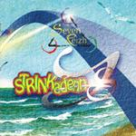

| Artist: | Seven Reizh |
| Title: | Strinkadenn |
| Label: | Musea Records FGBG 4408.AR |
| Length(s): | 73 minutes |
| Year(s) of release: | 2001 |
| Month of review: | [08/2002] |
| 1) | Selaou | 10.17 |
| 2) | Dornskrid | 3.10 |
| 3) | Sovajed A-Feson | 6.02 |
| 4) | Naer Ar Galloud | 6.49 |
| 5) | Hybry'Ys | 9.35 |
| 6) | Kan K&ehat;r'Ys | 6.25 |
| 7) | Liñvadenn | 5.03 |
| 8) | Tad Ha Mamm | 8.02 |
| 9) | EnoraHa Maël | 4.40 |
| 10) | Mall Eo Monet Da Ys | 8 |
Le Parchemin opens with friendly acoustic guitars. Lyrically it seems a repetition of the previous track. It is only a short track, to be replaced by the soothing percussive Sovajed A-Feson. This song is really full of lyrics with the guitar only lining the vocal parts in a somewhat distorted way. The percussion gets louder and louder, later we also get some backing vocals, but the song is variationless. Naer Ar Galloud continues the folky feel of the album, which does pervade it, never very happy though, with quite a bit of dark Floyd influences in there. This first part also includes the dying breathes of a large animal, an animal in pain. Then the music takes on a very different veel, very gothic with cathedral keys, rumbling percussion, growled vocals, to be later oversung by clear female vocals. The acoustic guitar reminds me of the first Alan Parsons Project album, the easy rhythm guitars and the symphonic lead guitar lift the sound to the modern day and age, with the Arena feel again right in there.
Hybr'Ys opens with a waltzy and merry tune on piano and acoustic guitar, nicely melodic in a folky vein. Again, with very pleasing results. The continuation has a religious, celtic feel with melodic but also somewhat monotone vocals. Not that the vocals are dreary, but they do not very much in intonation and energy. The final part brings us back to soothing atmospherics. On Kan K&ehat;r'Ys we hear the influence of classical music, and Mike Oldfield in the guitar work with additionally plenty of bagpipes playing. The drummer sends his rolls throughout and the music gets a Clannad feel by use of the ahhhh's in the music. The acoustic guitar and keyboards paint most of the somewhat relaxing music. In this fashion, the song alternates the various parts. Later the bagpipes enter the picture in a different way: very high, almost Arabic sounding with, almost like a village procession.
Linvadenn sounds very Arabic, because of the way the vocals sound. It even seems that the language is a form of Arabic, but when I read the lyrics it seems like the other tracks. It must be in the guy who is singing this lament. Tad Ha Mamm which is the follow-up is a typical neo-prog rock track opening with telephone and then running off in typical rock fashion with the guitar leading. You might be reminded of Jadis and the like here. The song also has its folk influences like the flute which might bring Quidam to the mind of some. This songs turns into a rather merry folky tune with the melody standing on the front and the bagpipes joining in making for a pleasant feel, but with plenty of variation as well and you need not be afraid that the folk element will suffocate or dominate the progressive/symphonic one.
Enora Ha Maël is a piano ballad with the soothing vocals of Enora. A very friendly track with organ in the back and acoustic guitar on the front. The final track is Mall Eo Monet Da Ys which opens menacingly with all kinds of dissonant effects on keyboards. This is one of the better tracks, with a drive reminiscent of Landmarq's Ta'Jiang and both male and female vocals. The links with Arena come back again here with some menace throughout in the vocal sections, reminding maybe a bit of Ange, but without the overdramatizing.